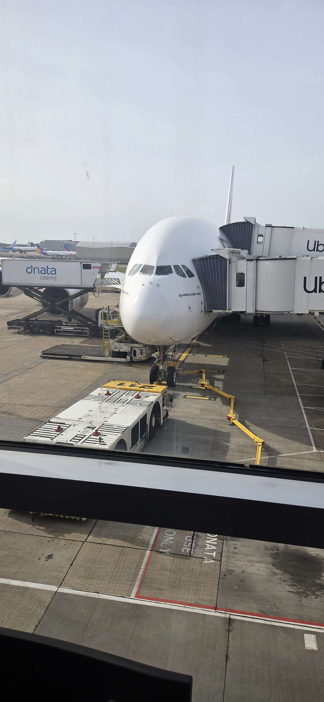
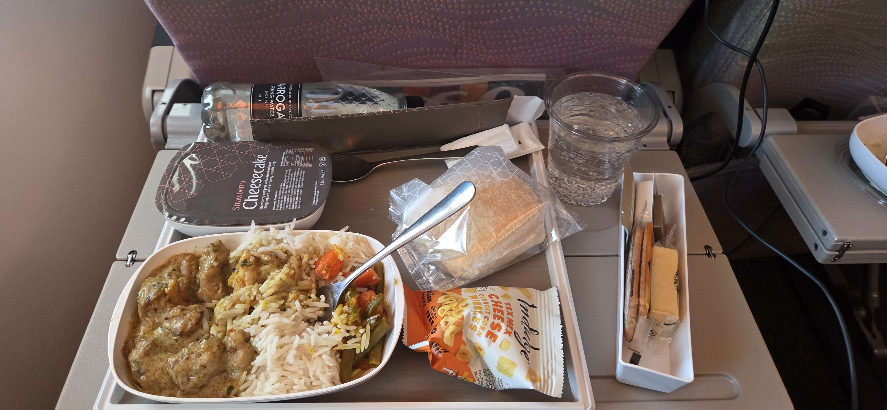
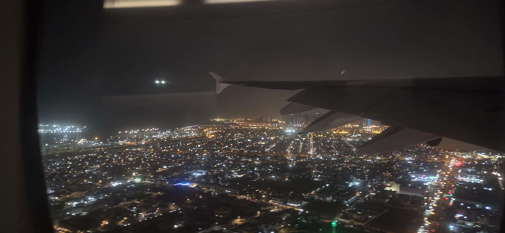
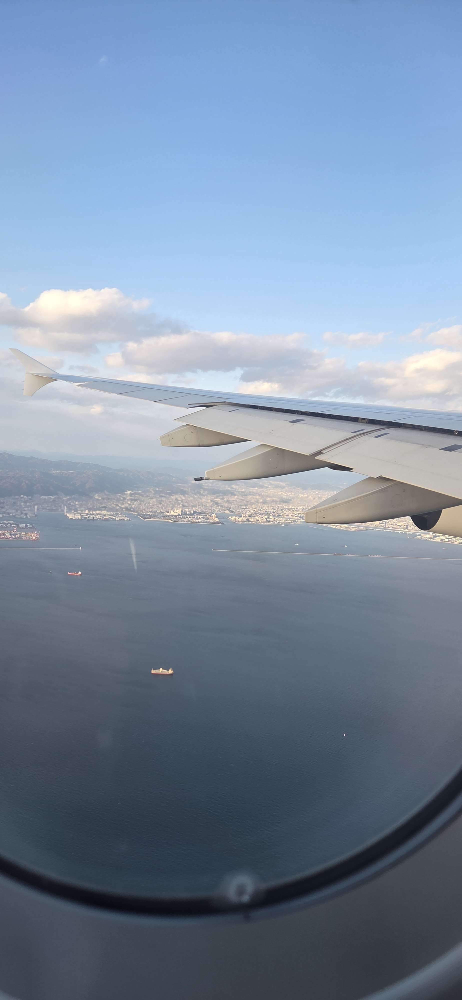
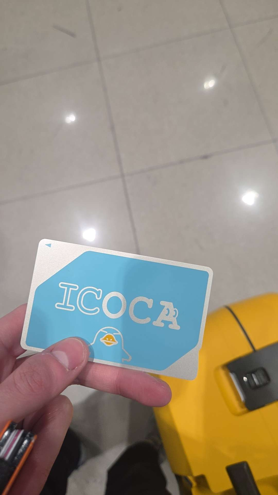

Prep and flying to Scotland
After many days of stress and prep, the day had finally arrived. Where the adventure begins. Friday was actually a lovely day, with the sun finally coming out for the first time in what
felt like weeks. With the sun on my face i went out, met some of my friends for the last time, got a pretravel haircut, and came home to add the last few things to my bag.
I had actually seen some of my friends the evening before, going to a much anticipated concert of ROMES, and acoustic electropunk band from Canada, was a great night, but did mean i came home a bit later than i had hoped 😅
Anyways, back to the friday, My suitcase weighed only 9kgs, there was an inial moment of panic as our scales were accidentally set to lbs (so 20.3lbs) but that go sorted quickly. After everything was packed, we had a final dinner together
I set off alone in a taxi at around 19:30 with my flight being 2 and a half hours later. Which was probably a bit early, as the airport was basically deserted,and check in/security took a grand total of 10minutes, plus the plane being 30mins delayed
this gave me ample time to read through one of my japan travel guides.
Landing at 23:30 meant it was quite quick to leave the airport, and get picked up by my dad, and then ending up home 15minutes later to the last 2 nights in a proper bed.








Arriving in Japan
Finally the big day has arrived, ot was finally time to depart to Japan! The whole thing started with me tired and in the dark ended with me tired and in the dark, just 5000miles away.
the first flight to london was entirely uneventful, with a 60min flight arriving 20minutes early due to an advantagous jet stream, landing in London at 7am.I proceeded to optimistcally aproach the checkin desk for emirates in hopes of getting my bag checked in 6hours early
but i was swiftly (but kindly) rejected, being told i had to sit in the departure area for another 2hours. So i hunkered down on the floor with a meal deal and waited out the time
Eventually the time came and i managed to finally check in. after that all the i had to do was wait for the plane, a A380-800 for you nerds (Ahaan). This plane was massive, and i walked on board gobsmacked at the scale, size and fancyness of the plane.
Luckily it was a quiet flight, so i had the row to myself, less luckilly i had a passenger behind me that didnt stop kicking/hitting the screen on my chair, so that was a bit annoying. We were served a nice dinner of chicken curry and a strawberry cheesecake. which both were very delicious. And i decided i would be cultured and watch the new Leonardo DiCaprio film on the wasy to Dubai. I did take a stroll on the plane to stretch my legs before i took a quick nap, i shouldve stravaed it
After what only felt like a couple hours, we landed in Dubai, 24 degrees and humid, and i could feel it in the 20min bus ride to a different terminal. Plus a security check on entering the terminal, i only had an hr to get ready for my next flight to Osaka
the affair was very much the same, except more people, and more food. This time including breakfas and lunch(based on what time zone i couldnt tell you). Here i watched Intersteller and Tenet. Both interesting in their own right. Yet
again after a failed attempt at having a decent sleep, we were already beginning our decent around South Korea. With it being oly around 4pm when we landed, i had an amazing view of the islands, and could even spot a couple of locations where i will be staying later on in my travels. With the sun on the green mountains of Japan. I was really here!
THis quick euphoria was quickly overtaken, once on the ground, by a realisation that the travek to tokyo from Osaka was closer to 4.30hours and not 3hours (Who couldve thought that the airport isnt ontop of Osaka central station). I decided there to go with plan B, delaying my stay in Tokyo by one night, and buying a backup hostel here for 1 night instead.
With a better concious and less stress i began the usual procedures of arriving in a foreign country. Except evyerthing was actually planned well and incredibly efficient. from leaving the plane to getting thought security took no more than 15mins, and that included a 5 minute monorail ride. Bagagge claim was the same ordeal, aswell as buying my ICOCA pass, which shall be my trusty compainion
throught much of my adventures. Then a train + metro to get into the center of the city, and finally, after 30hours of travelling, i was here!